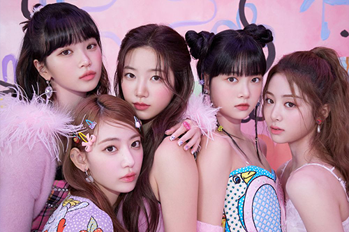

|
NewJeans2022년 7월 22일에 데뷔한 ADOR 소속의 5인조 다국적 걸그룹으로, 멤버는 민지, 해린, 하니, 다니엘, 혜인으로 구성되어있다. 대중음악은 일상과 초 근접해 있는 문화이기 때문에 마치 매일 입는 옷과 같다. 특히 진(Jean)은 시대를 불문해 남녀노소 모두 에게 사랑받아온 아이템이다. 뉴진스는 매일 찾게 되고 언제 입어도 질리지 않는 진처럼 시대의 아이콘이 되겠다는 포부와 New Genes가 되겠다는 각오가 담겨있다. 대표곡으로는 2022년에 발매한 'Hype boy'와 'Attention' 이 있다. 뉴진스에 대해 더 알아보고 싶다면? 


|
|  |
LE SSERAFIM2022년 5월 2일에 데뷔한 쏘스뮤직 소속의 5인조 다국적 걸그룹이며, HYBE와 산하 레이블인 쏘스뮤직이 협력해 론칭한 첫 번째 걸그 룹이다. 멤버는 윤진, 채원, 사쿠라, 카즈하, 은채 이렇게 5명으로 구성되어 있다. LE SSERAFIM은 'IM FEARLESS'를 에너그램 방식 으로 만든 이름으로, '세상의 시선에 흔들리지 않고 두려움 없이 앞으로 나아가겠다는 자기 확신과 강한 의지를 내포한다. 대표곡으 로는 2022년도에 발매한 'Fearless'와 'Antifragile'이 있다. 르세라핌에 대해 더 알아보고 싶다면?
|